| RELIEF
ORIGINAL |
|
|
| 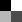 |
 |
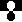 |
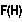 |
 |
 |
|
| 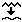 |
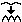 |
 |
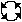 |
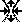 |
 |
 |
 |
 |
 |
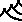 | 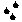 |  |
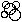 |
 |
 |
 |
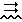 |
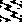 | 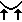 |
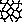 |
| Outil |
Utilisation,
conseils |
Exemple |
| 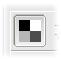Luminosité
et contraste |
Ces contrôles de
luminosité et contraste sont similaires à ceux offerts
par la plupart des logiciels de manipulation d'image, à la
différence que la luminosité doit être
interprétée comme l'altitude. À souligner:
L'exemple 2 montre les "vallées" créées lorsque l'option "Inverser la pente" est active et la luminosité est diminuée à -80. |
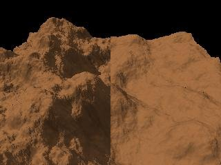 |
Seuil |
Cet outil "coupe" les sommets du
relief à une valeur maximale, et ses creux à une valeur
minimale. Son usage le plus évident est de simuler des mésas (voir le tutoriel sur le désert). Un curseur "%" permet de fusionner le résultat avec le relief source. Ainsi, l'exemple montré utilise 60% du résultat et 40% de la source. Cela introduit un peu de bruit dans les régions coupées, pour plus de réalisme. Ici, l'altitude a été coupée avec un minimum de 15000 et un maximum de 40000. |
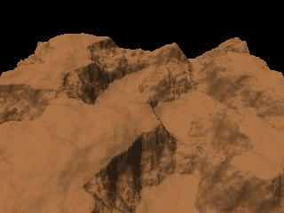 |
| 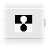Inversion |
Inverse la hauteur des pixels (0
est remplacé par 65535, 1 par 65534, et ainsi de suite). Cliquez sur le bouton à nouveau pour revenir à l'original. |
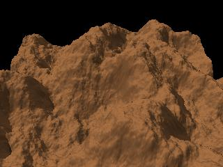 |
| Transformations
mathématiques |
Cet outil applique des
transformations de puissance ou logarithmiques. Une transformation de puissance augmente le caractère abrupt des pentes, rend les sommets plus étroits et diminue le bruit au bas des pentes. Par contre, une transformation logarithmique élargit les sommets et diminue le bruit en altitude Une transformation de puissance avec un exposant inférieur à 1.0 a aussi pour effet d'élargir les sommets. Dans l'exemple donné, la fonction puissance(altitude,4) a été appliquée au relief par défaut. Une rotation de 180° a été appliquée dans l'aperçu. |
 |
Ville |
Cet outil découpe le
relief en cellules carrées ou rectangulaires,
séparées par des "rues", et fait la moyenne des altitudes
à l'intérieur de chaque cellule. Avec une texture appropriée, le résultat peut ressembler à une ville de gratte-ciel (quelqu'un pourrait dire: si le relief est assez éloigné de la caméra...), ou quoi que ce soit que vous puissiez imaginer. Pour obtenir une ville post-apocalyptique, le résultat peut être fusionné avec le relief source afin d'ajouter du bruit au sommet des gratte-ciel (essayez "x" comme opérateur de fusion et 100% comme valeur de mélange), puis érodé, et ainsi de suite... Je dois créditer le logiciel Bryce pour cette idée. Malheureusement, Geomorph n'offre pas encore de texture qui simule de façon réalise des rangées de fenêtres, dans la version 0.23. C'est laissé comme exercice à l'utilisateur ;-). |
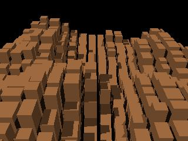 |
| 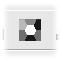 Chaussée des géants |
Cet outil fonctionne comme
l'outil "ville", sauf que les cellules à l'intérieur
desquelles la moyenne est faite sont hexagonales plutôt que
rectangulaires. L'usage envisagé est de simuler des piliers de basalte comme ceux de la Chaussée des Géants, en Irlande du Nord. Les hexagones sont séparés par une bordure dont la largeur est contrôlable par l'utilisateur. Un dialogue permet de fusionner la source et le résultat, afin d'ajouter du bruit au sommet des colonnes. L'exemple a été créé avec les paramètres suivants, les autres étant laissés à leur valeur par défaut: Rayon: 32; Bord: 1; Lissage - rayon: 2; Mélange source et résultat: 50. |
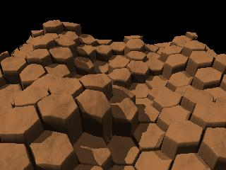 |
Terrasses |
L'outil "Terrasses" stratifie
l'altitude selon le nombre de niveaux spécifié par
l'utilisateur. La hauteur des niveaux peut être randomisée pour donner un résultat plus naturel. Un dialogue de post-traitement est proposé afin de lisser les arêtes des niveaux et de retirer les "aiguilles" (artéfacts) qui sont créées quand la surface du niveau le plus élevé d'une colline est trop étroite. À noter que ce dialogue contient un bouton "Appliquer" distinct, parce que ce post-traitement est trop exigeant en temps UCT pour être appliqué interactivement, lorsque les curseurs sont déplacés (autrement dit: n'oubliez pas de cliquer sur ce bouton si vous déplacer les curseurs du dialogue de post-traitement!). Comme dans plusieurs outils, le résultat peut être fusionné avec la source. C'est une façon d'éviter d'obtenir des niveaux moins plats, qui peuvent avoir l'air moins naturels. La fusion de la source et du résultat avec une opération de soustraction peut aussi être utilisée pour créer une cavité remplie avec de l'eau, comme dans cette scène. L'exemple montré a été calculé à partir des paramètres suivants, les autres étant laissés à leur valeur par défaut: Niveaux: 7
Racine: 550023695 (pour la
randomisation)
Rayon de lissage: 2 Rayon de suppression des artéfacts: 10 Fusion - mélange: 0 (50% de la source + 50% du résultat) |
 |
| 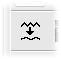 Lissage |
Il s'agit d'un outil standard de
lissage, qui enlève les fréquences les plus
élevées du relief (c'est-à-dire les
détails). L'outil peut aussi être utilisé pour
enlever les fréquences les plus basses et conservers les plus
élevées. Cet outil est utile dans un grand nombre de situations, par exemple pour enlever de légers défauts après une transformation ou pour préparer le terrain en vue de certaines transformations. Un exemple de correction de défauts est donné par un terrain de type "subdivision 2" généré sans les hautes fréquences. Ce genre de terrain requiert souvent un peu de lissage pour faire disparaître le "réseau générateur", une structure ressemblant à un craquelin au soda. L'exemple du haut montre le résultat du lissage du terrain par défaut avec un rayon de 20 pixels. L'image du bas montre ce qui a été enlevé lors du lissage. Ce sont les hautes fréquences. Pour les obtenir, c'est-à-dire pour enlever les basses fréquences, il faut choisir l'opération "-" (soustraction) dans le dialogue de fusion source / résultat, et déplacer le curseur du paramètre "Mélange" à une valeur légèrement inférieure à 100. |
 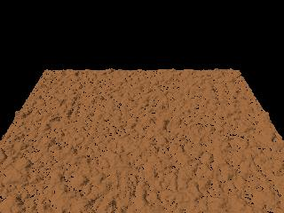 |
| 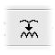Accentuer le bruit | Cet outil est similaire à
la fonction d'"augmentation des contrastes" ("sharpen") offerte par les
programmes de dessin non vectoriel comme The Gimp. Avec un faible rayon, l'outil peut être utilisé pour augmenter le bruit de surface du terrain, comme dans l'exemple montré. Ici deux passes ont été faites avec un rayon de 1 et le niveau à 7,5. Un rayon élevé accentue les bordures et amplifie les reliefs dont la fréquence correspond au rayon, en lissant les fréquences plus élevées. De plus, les lignes ou zones foncées s'élargissent. |
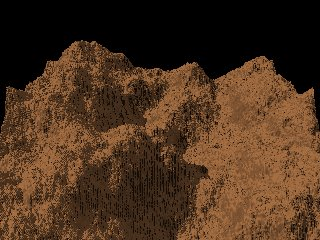 |
Translation |
Les reliefs
générés par Geomorph sont pavables,
c'est-à-dire qu'ils peuvent être disposés en
tuiles., Les côtés Est et Ouest d'une part, et Nord et Sud
d'autre part, se connectent sans couture ou s'"enroulent". Cela signifie qu'un relief peut être "déplacé" en continu, par exemple pour centrer une colline. L'exemple montre le résultat d'une translation horizontale de 30% et verticale de -50%. |
|
| 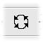 Rotation |
Un terrain peut subir une
rotation d'un angle arbitraire, sans bris de continuité. La rotation d'un angle autre qu'un multiple de 90° annule la propriété de pavage. Lorsque le terrain est pavable, les zones situées hors des limites du terrain source sont complétées en "enroulant" le terrain. Par exemple, l'indice 512 d'un terrain de 512x512 est remplacé par l'indice 0, l'indice 513 par 1, et ainsi de suite. Lorsque le terrain n'est pas pavable, le complément est fait par un effet de miroir: l'indice 512 est remplacé par 511, 513 par 510, et ainsi de suite. La rotation du terrain ne doit pas être confondue avec la rotation de la caméra dans l'aperçu. La rotation du terrain n'est généralement pas réversible, sauf quand l'angle est un multiple de 90°. Par contre, la rotation de la caméra ne réfère qu'à l'angle de vision du terrain et peut être remise à 0 à tout moment. L'exemple montre une rotation de 45°. |
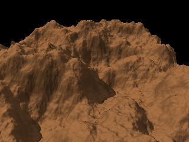 |
Étirement et compression |
Cet outil est principalement
basé sur la propriété de pavage discutée
pour la translation et la rotation. Parce que le Nord et le Sud, ainsi que l'Ouest et l'Est se connectent en continu, un relief peut être "étiré" en plaçant 2 copies de lui-même côte à côte, et en diminuant l'un des axes de 50%. La répétition du processus sur l'autre axe produit 3 pavés du même terrain. L'exemple du haut montre le terrain par défaut après un étirement vertical (N-S). L'exemple du bas montre le même terrain après un étirement vertical (N-S), suivi d'un étirement horizontal (E-O). Il faut cliquer sur le bouton "Accepter" entre les deux étirements. Notez comment le résultat est accidenté. Le relief original apparaît 4 fois, réduit de 50% sur les axes X et Z, mais l'altitude (axe Y) n'est pas réduite. |
  |
Mirroir horizontal |
Le relief est retourné
horizonalement dès que l'on clique sur l'icône. Cliquez sur l'icône à nouveau pour revenir au relief d'origine. |
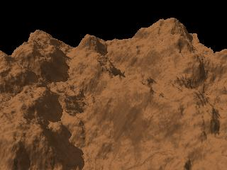 |
Mirroir vertical |
Le relief est retourné
verticalement dès que l'on clique sur l'icône. Cliquez sur l'icône à nouveau pour revenir au relief d'origine. |
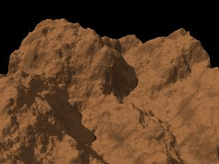 |
| 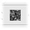Noise | Cet outil appelle l'algorithme
"subdivision 2", n'en conserve que les hautes fréquences qui
font office de "bruit", et les additionne au relief courant. L'exemple a été calculé en prenant comme source le terrain lissé avec un rayon de 20 pixels. Le résultat n'est pas immédiat. Pour l'obtenir, vous devez régler le pourcentage à une valeur supérieure à 0% puis cliquer sur le bouton "Appliquer". Des curseurs permettent de régler les paramètres de "Distribution" et "Relief". La "Distribution" contrôle la densité du bruit. Plus la distribution est élevés, plus les aspérités sont éparses. Ce paramètre est utilisé comme exposant de l'altitude. Le "Relief" contrôle l'amplitude du bruit. |
 |
Fusion |
L'outil de fusion sert à
superposer le terrain courant (celui que vous êtes en train
d'éditer) avec un terrain choisi parmi ceux qui sont
déjà ouverts. Une liste des terrains disponibles et un aperçu de celui qui est choisi sont affichés dans le dialogue de l'outil. Le terrain choisi peut être ajouté, soustrait ou multiplié avec le terrain actif. Les deux terrains peuvent être aussi comparés avec une fonction minimum ou maximum. La luminosité relative des deux terrains peut être ajustée. Le terrain choisi (fusionné) peut être aussi déplacé par rapport à l'autre pour obtenir des effets particuliers. Cet outil a été créé dans un but très général. Par exemple, il peut servir à ajouter un type de bruit particulier, ce bruit étant fourni par le terrain choisi. Une autre utilisation moins évidente est celle donnée en exemple. Le terrain par défaut a été fusionné avec lui-même pour donner un effet de crêtes. L'opération "min" a été choisie, la valeur "mélange" a été mise à 0, et le terrain choisi a été déplacé horizontalement de 20%. Un truc: pour rafraîchir la liste des reliefs dans l'aperçu du dialogue de l'outil, cliquez à nouveau sur l'icône de l'outil. Plusieurs outils de Geomorph offrent la fonction de fusion dans un sous-dialogue. Dans ce cas, le terrain courant est implicitement la source, et le terrain choisi est le résultat. |
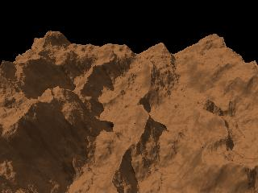 |
Filtre de forme |
L'utilité du "filtre de
forme" est principalement d'abaisser les côtés en
additionnant ou en multipliant le relief avec une fonction
dérivée de la courbe gaussienne. Cela crée une "île". L'apparence est différente selon que la cloche est ajoutée au terrain (exemple 1) ou multipliée avec (exemple 2). La multiplication donne une sorte de rivage dont l'altitude décroît progressivement. Dans les deux exemples, la caméra a été tournée de 180°. |
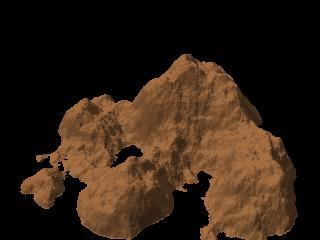 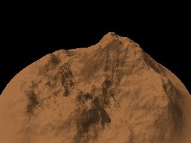 |
| 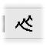 Crêtes |
Cet outil érode le
terrain en retirant une partie du sol, variant selon la pente. Les endroits dont la pente est inférieure à un seuil exprimé en degrés et choisi par l'utilisateur ne perdent pas de sol et deviennent des crêtes. L'utilisateur choisit le nombre de fois que le processus est répété. L'exemple a été produit avec 8 répétitions. Cet outil est très utile pour donner une apparence plus naturelle au terrain. Une utilisation recommandée est de raffiner les crêtes créées par l'"érosion par la pluie" ou l'"érosion fantaisiste". Essayez quelque chose comme 3 répétitions. L'outil peut aussi être utilisé pour "élargir" les collines. Essayez ceci: inversez le terrain, appliquez l'outil crêtes, puis inversez le à nouveau. Voici des particularités qui peuvent aider à comprendre le processus:
|
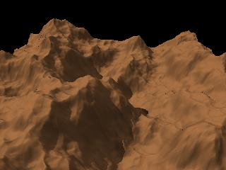 |
| 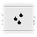 Érosion par la pluie |
Cet outil crée un terrain
érodé en déversant de la pluie goutte par goutte
sur des coordonnées aléatoires. Quand la pente est
supérieure à un certain seuil en degrés, les
gouttes déplacent du sol vers le bas de la pente. Quand la pente
est inférieure à ce seuil, le sol est
déposé. Le processus découpe des canaux
étroits dans la surface. Le résultat peut être raffiné en appliquant l'outil "crêtes", avec 2 ou 3 répétitions. Le sol est déplacé vers le bas de la pente dans une de 6 directions, à chaque point. Autrement dit, le processus simule une symétrie hexagonale. Notez que l'algorithme a été amélioré entre la version 0.31 et la version 0.4. L'ancien algorithme ne fonctionnait pas correctement sur des surfaces planes craquelées. De plus, la simulation de la symétrie hexagonale n'était pas au point, il y avait des artéfacts. L'ancien algorithme est encore disponible, cependant. Le nouvel algorithme propose deux paramètres principaux: la force, qui correspond à la quantité de sol déplacée à chaque itération, et la dureté, qui correspond en gros à la pente des parois des canaux, ou à l'inverse du degré de diffusion du sol déplacé. Une dureté peu élevé donne des canaux plus "flous". Le premier exemple montré a été produit avec l'ancien algorithme et 25000 gouttes. Le second exemple a été produit avec le nouvel algorithme et 100000 gouttes. Notez que le résultat est très sensible à la grandeur du terrain. Les canaux sont créés au niveau des pixels. Ils auront l'air plus étroits sur une surface de 1024x1024 que sur une surface de 512x512. De plus, un terrain de 1024x1024 requiert 4 fois plus de gouttes qu'un terrain de 512x512 pour obtenir le même niveau d'érosion, parce que sa surface est 4 fois plus grande. Contrairement à l'outil "crêtes", l'érosion par la pluie ne diminue pas l'altitude moyenne du terrain. |
  |
| 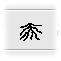 Érosion fantaisiste |
L'"érosion fantaisiste"
peut être utilisée pour générer rapidement
une apparence "côtelée". Le paramètre de rayon contrôle l'échelle (la fréquence) des "côtes". Cet outil ne prétend en aucune façon simuler quelque processus naturel que ce soit. Le résultat va généralement montrer des "boucles" non convaincantes dans les vallées. Cependant,le résultat peut constituer un point de départ pour un travail d'érosion supplémentaires avec d'autres outils, qui feront disparaître ces "boucles". L'exemple 1 montre le résultat lorsque les paramètres par défaut sont utilisés. L'exemple 2 montre le même résultat, modifié avec le cycle suivant de transformations:
Un truc pour les aventureux: un résultat étrange peut être obtenu en réglant à 0 le paramètre "mélange" du sous-dialogue de "fusion". |
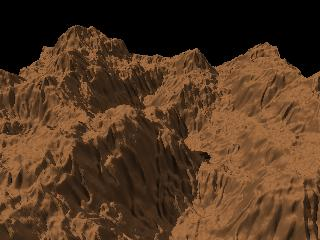 |
Cratères |
Cet outil vise à imiter
une "pluie de météores". Il fonctionne mieux sur un terrain de contraste réduit. Jouez avec les paramètres de bruit pour obtenir un résultat plus convaincant. L'exemple a été produit en utilisant le terrain par défaut, après avoir réduit sont contraste à -50 à l'aide de l'outil "Luminosité et contraste". 20 cratères ont été demandés, et le bruit radial a été réglé à 8%. |
 |
Ondes |
Cet outil applique des
déplacements ondulatoires au relief, selon un axe choisi par
l'utilisateur. Le dialogue par défaut propose 2 onglets. Le premier onglet est préréglé pour produire une déformation verticale (sur l'axe Y), le second pour produire un déplacement horizontal (sur l'axe X ou Y, selon la rotation du déplacement). Pour voir le résultat de la transformation, le curseur de l'"amplitude" doit être réglé à une valeur supérieure à 0. Les transformations sont appliquées ("empilées") dans l'ordre des onglets. Par exemple, quand les 2 onglets sont réglés pour déplacer le terrain verticalement, et l'un des ensembles de vagues est tourné de 90°, un réseau d'interférences apparaîtra. L'utilisateur peut ajouter des onglets pour empiler plus de 2 déformations. Des déformations latérales (X-Z) créeront des bordues non continues sur les terrains non pavables. Parmi les techniques visant à minimiser cet effet, on peut cadrer le terrain avec la caméra pour masquer les bordures, ou utiliser le "filtre de forme" pour lisser progressivement les côtés (créer une île). Dans le futur, souhaitons-le, Geomorph offrira une fonction de mise à l'échelle pour "couper" ces bordures. L'exemple 1 montre une utilisationsimple de l'outil. Dans le premier onglet (déformation verticale), l'amplitude est réglée à 36, la période à 6 et la rotation à 135°. Dans le second (déformation latérale), l'amplitude est réglée à 35 et la période à 8. L'exemple 2 montre comment l'outil peut être utilisé pour élever des collines à l'arrière-plan. En premier lieu, l'outil "Luminosité et contraste" a été utilisé pour diminuer le contraste à -30, l'option "Conserver la luminosité" étant désactivée. En second lieu, dans l'outil "Ondes", seul le premier ongle a été utilisé, pour créer une seule vague dans l'image (période = 10). La phase a été réglée à 50, pour déplacer la crête de la vague à la bordure Nord. L'amplitude a été réglée à 50. Cette technique a été utilisée pour élever les montagnes d'arrière-plan dans l'exemple du Désert Peint. |
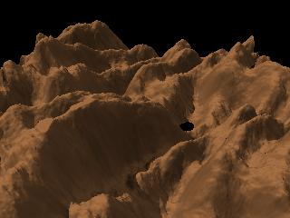 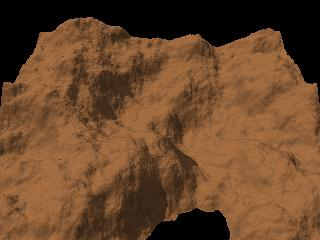 |
| 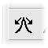 Érosion par gravité |
Cet outil déplace le sol
selon la pente. Contrairement à l'outil "crêtes", aucun sol n'est perdu. L'altitude moyenne du terrain reste en gros la même. Cet outil peut être utilisé pour adoucir la surface en conservant un peu de bruit. Avec un seuil de pente élevé, on obtient des crêtes légères. L'exemple 1 montre le relief par défaut après 50 répétitions, avec un seuil de pente de 60°. Notez les crêtes. L'exemple 2 montre le résultat après 50 répétitions et un seuil de pente de 30°. |
 |
Érosion par gravité orientée |
Cet outil applique
l'érosion par gravité selon une des 4 directions
cardinales (N - S - E - O). L'exemple 1 montre le résultat après 50 répétitions, dans la direction par défaut (Est). Dans l'exemple 2, le premier résultat a été confirmé, la direction a été changée pour l'Ouest et le processus a été appliqué à nouveau 50 fois. Dans l'exemple 3, le dialogue de fusion a été utilisé pour superposer le terrain original avec l'exemple 2. La luminosité de l'un des reliefs a dû être ajustée pour donner un effet de "rochers" qui sortent du "sable". La caméra a été tournée de 345° (-15°) autour de l'axe Y. |
 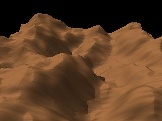  |
Dunes |
Cet outil déplace le sol
de gauche à droite, en le projetant comme s'il s'agissait de
sable au vent. La formule utilisée est dérivée des recherches de Bruno Andreotti et ses collègues au sujet des dunes barkhanes (dunes en forme de croissant). Les résultats ne sont pas aussi réalistes qu'ils pourraient l'être (il est difficile d'obtenir des dunes barkhanes avec l'outil!), mais suffisent à un usage artistique. L'exemple montre le résultat obtenu à partir des paramètres par défaut. Ces paramètres, contrôlables par l'utilisateur, sont:
|
 |
| 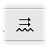 Vaguelettes |
Cet outil crée des
vaguelette en "faisant ramper" des grains de sable. SVP notez:
|
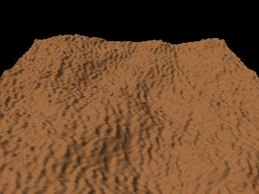 |
| 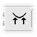Relever les bords |
Cet outil peut être
utlisé pour relever les bords de surfaces planes dont les bords
sont abrupts. Les exemples "Terraces" et "Chaussée des géants" ont recours à cet outil. |
 |
| Cet outil sert à
créer différents types de réseaux de craquelures,
des plus réalistes aux plus fantaisistes. Vous pouvez même écrire un mot et l'intégrer comme des craquelures dans le réseau. Ce guide propose quelques exemples et des explications. |
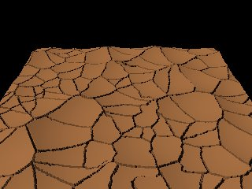 |
 Retour à l'index de la
documentation
Retour à l'index de la
documentation{kind=link}